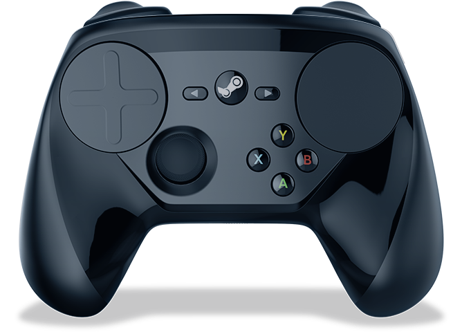
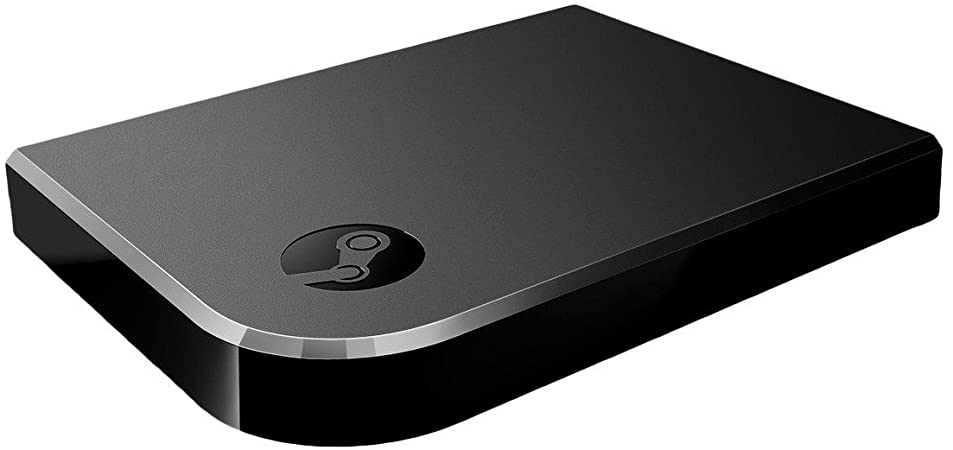

Page Contents
Summary
Valve Corporation is an American video game developer and digital distributor company in Bellevue, Washington. It was founded in 1996 by Gabe Newell and Mike Harrington, two ex Microsoft employees. The company is widely known for Steam and its critically acclaimed first-person shooter series, Half-Life, with the first being released in 1998. Also, the company develops the SteamOS. The company plans to make popular the all-in-one hardware, called Steam Deck, by the first half of 2022.
Details
| Industry |
Video Games Digital Distribution Hardware |
|---|---|
| Founded | August 24, 1996 |
| Founders |
Gabe Newell Mike Harrington |
| Headquarters | Bellevue, Washington, US |
| Total Equity | $10 billion (2019) |
| Website |
valvesoftware.com steampowered.com |
Video Game Titles
| Name | Release Year | Genre |
|---|---|---|
| Half-Life | 1998 | First-person shooter |
| Half-Life: Opposing Force | 1999 | First-person shooter |
| Team Fortress Classic | 1999 | First-person shooter |
| Ricochet | 2000 | First-person shooter |
| Counter-Strike | 2000 | First-person shooter |
| Half-Life: Blue Shift | 2001 | First-person shooter |
| Deathmatch Classic | 2001 | First-person shooter |
| Day of Defeat | 2003 | First-person shooter |
| Counter-Strike: Source | 2004 | First-person shooter |
| Half-Life 2 | 2004 | First-person shooter |
| Half-Life 2: Deathmatch | 2004 | First-person shooter |
| Half-Life: Source | 2004 | First-person shooter |
| Day of Defeat: Source | 2005 | First-person shooter |
| Half-Life 2: Lost Coast | 2005 | First-person shooter |
| Half-Life Deathmatch: Source | 2006 | First-person shooter |
| Half-Life 2: Episode One | 2006 | First-person shooter |
| Half-Life 2: Episode Two | 2007 | First-person shooter |
| Portal | 2007 | First-person shooter / Puzzle |
| Team Fortress 2 | 2007 | First-person shooter |
| Left 4 Dead | 2008 | First-person shooter |
| Left 4 Dead 2 | 2009 | First-person shooter |
| Alien Swarm | 2010 | Third-person shooter |
| Portal 2 | 2011 | First-person shooter / Puzzle |
| Counter-Strike: Global Offensive | 2012 | First-person shooter |
| Dota 2 | 2013 | First-person shooter |
| The Lab | 2016 | VR / First-person shooter / Puzzle |
| Artifact | 2018 | Digital Collectible Card Game |
| Half-Life: Alyx | 2020 | VR / First-person shooter |
Half-Life: Alyx recieved a huge amount of support following its announcement trailer (below). This was mainly due to it being more than 10 years since the last installment in the series, and a growing meme insinuating that Valve are inable to count past 3, evidenced by none of their series passing the second installment. Will this be their first "...3"?
Steam
Launched in 2003, Steam is an internet-based digital distribution, digital rights management, multiplayer and social networking program developed and distributed by Valve Corporation. Steam has its own store where the user can purchase video games and other software. It is available for Microsoft Windows, OS X and Linux. Steam also has an application for smartphones which is available for Android and iOS. Steam can also be used as a communication software, meaning that you can talk with people if they are your friends on Steam.

Hardware and Peripherals
Steam Controller (2015)
Featuring dual trackpads, HD haptic feedback, dual-stage triggers, back grip buttons, and fully-customizable control schemes, the Steam Controller is designed to allow you to play your entire Steam game collection, even those designed without controller support in mind.
Steam Link (2015)
Using Steam Link, you can connect to any computer that's running Steam - either on a local network or over the internet. Steam Link is designed to take advantage of the horsepower you already have in your home, streaming from your current gaming computer by mirroring its experience to your device. Video and audio data is sent from your computer to Steam Link, while your controller input is sent back in real time.
Valve Index (2019)
The Valve Index is Valve's first virtual reality headset developed and
manufactured in house, and is planned to be the launch console for Valve's
upcoming virtual reality games. Hardware-wise, at release the Valve Index
was pretty much the peak of VR technology. Featuring a total display
resolution of 2880x1600, high refresh rate, brilliant tracking audio and a
pair of incredibly intuitive controllers, this is still the ultimate VR
kit one two three years later!
Steam Deck (2022)
One part Nintendo Switch, one part gaming PC, the Steam Deck is a handheld system with gaming power underneath its screen. While it looks like a lot like a console, it's as open as a PC, which means you can plug it into a monitor or TV, hook up controllers or a mouse and keyboard, even install Windows over its Linux innards if you prefer. But the Steam Deck has some unique features that give it a more streamlined console-like experience.

The new version of SteamOS, Valve's Linux-based operating system, will be able to seamlessly play games that were built for Windows thanks to a compatibility tool called Proton. The system can suspend and resume games, too, and supports some fancy new AMD graphics features, like FidelityFX Super Resolution upscaling.